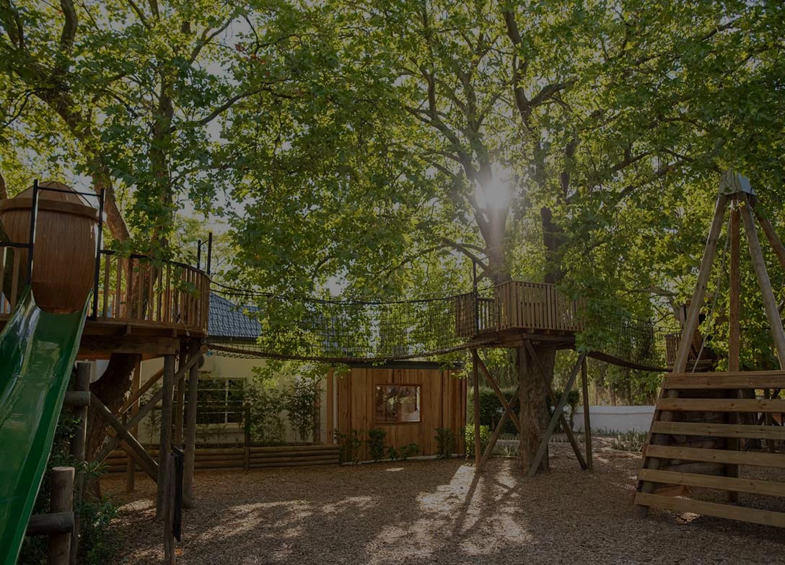
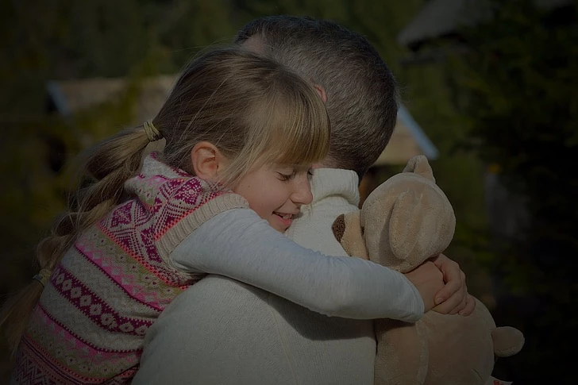
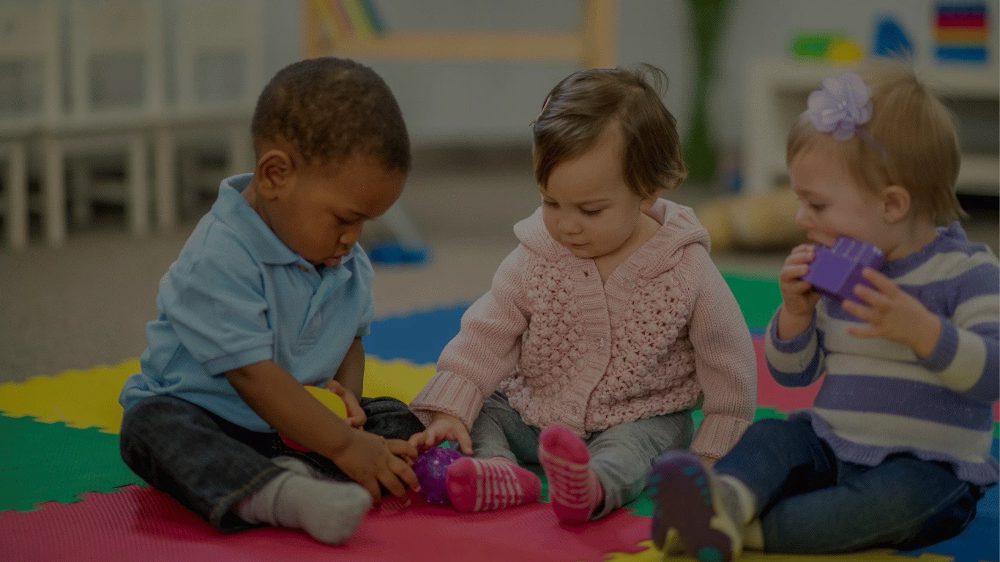
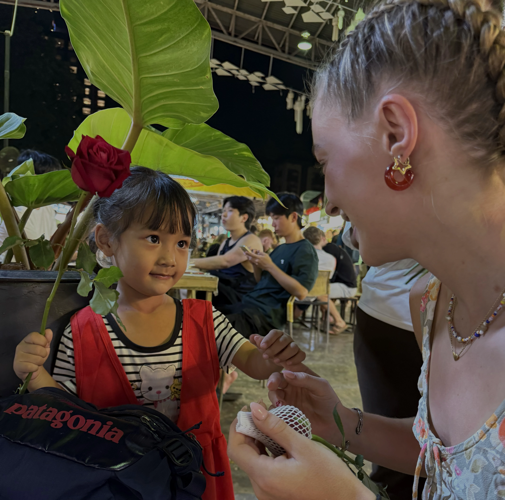

Gode råd til forældre til børn i institution
Fra en erfaren pædagogmedhjælpers perspektiv
Skal dit barn starte i institution? Herunder kan du få gode råd til den måske svære start:
Introduktion
At skulle starte i institution for første gang kan være hårdt. Både for ens barn, men også som forælder. Bekymringer som "hvordan skal jeg som forælder reagerer, hvis mit barn græder ved afleveringen? Skal jeg blive og trøste mit barn, eller skal jeg lade pædagogerne gøre deres arbejde?". Og bekymringer som "hvad kan jeg som forælder gøre for, at mit barn får den bedst mulige start på institutionslivet?".
Man kan have brug for som forælder, at tale om sine bekymringer. Men i sin travle hverdag, og i pædagogernes travle hverdag, er det ikke altid at der er tid til det. Og som forælder, kan det føles mest naturligt, at tale med de uddannede pædagoger om sit barns udvikling, trivsel, udfordringer og den generelle dagligdag. Jeg har i hvert fald som pædagogmedhjælper oplevet, at forældre hellere vil tale med pædagogerne om, hvordan deres barn har haft det, i stedet for at tale med mig, som måske ved mere om den givende situation, end hvad pædagogerne gør.
På mit site, kan du læse om forskellige aspekter, der omhandler barnets institutionsstart.
Vælg din vej herunder:



